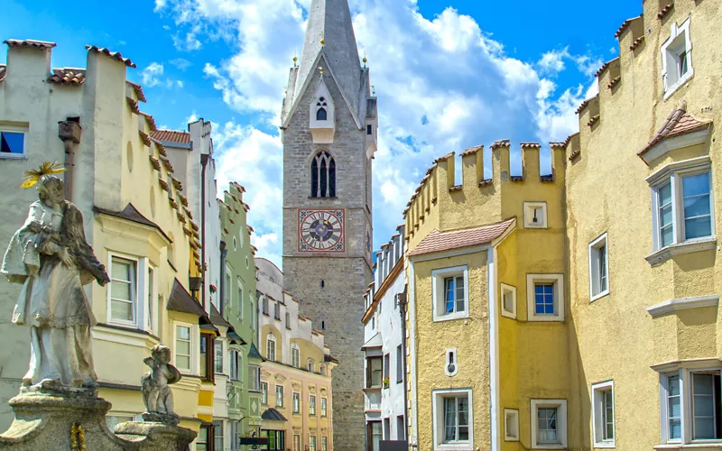

Italy: Bressanone-Brixen
Strolling through the historic centre of Bressanone, also known as Brixen, is always a pleasure, but doing so in the Advent season is a true delight. Against the backdrop of the magnificent cathedral square and in the arcaded alleyways of the centre, the wooden and light boxes of one of South Tyrol's most beautiful Christmas markets transform a city where ancient Advent traditions are still very much alive among the locals.
In the oldest and most noble city in the Tyrol, you will find a charming Christmas market that winds its way from the cathedral square where a Christmas tree is lit up in the large flowerbed decorated like a large Advent wreath, with four torches that are lit on the four Sundays leading up to 25 December.
At the market stalls, visitors can buy wood carvings and nativity figurines, terracotta objects, hand-painted glass globes, fabrics, cloth jackets, leather goods, the ubiquitous felt slippers or woollen slippers, and organic cosmetics, all exclusively produced or crafted in South Tyrol.
Market
At the market stalls, visitors can buy wood carvings and nativity figurines, terracotta objects, hand-painted glass globes, fabrics, cloth jackets, leather goods, the ubiquitous felt slippers or woollen slippers, and organic cosmetics, all exclusively produced or crafted in South Tyrol.
There are also typical gastronomic specialities from the Isarco Valley, from dumplings to speck, from Barbiano plums to chestnuts and medicinal herbs. And then of course the beeswax candles, a classic feature of Brixen market, where on 7 December St. Ambrose, the patron saint of beekeepers and wax workers, is celebrated: to mark the occasion, visitors are offered the chance to make a beeswax candle with their own hands.
On 4 December, St Barbara's Day, or Barbarazweige, the branches of St Barbara, are distributed. According to a local custom, on 4 December each family cuts a cherry tree branch and keeps it at home in a vase filled with water: if the branch blossoms at Christmas, it is a good omen for happiness.
If you are an early riser, here you can take part in a collective rite that has been celebrated continuously since 1606: at 6.15 a.m., the cathedral bells call the faithful to the 6.30 a.m. morning mass (here called “rorata”), by candlelight, with choirs and carols. The pre-Christmas masses are attended by hundreds of people before going to the office or school: after the service, tradition holds that people have breakfast together with friends and relatives.

In the galleries of the Hofburg, the sumptuous bishop's palace in Brixen where the German emperors were hosted, among the many art treasures, there is one of the world's most important nativity scene collections. It consists of a series of very valuable nativities from all over Europe, starting with the two large nativity scenes commissioned by Prince-Bishop Franz Graf von Lodron with about 5,000 figures. On display are nativities in ivory, terracotta, wood and papier-mâché, also from Naples and Sicily.